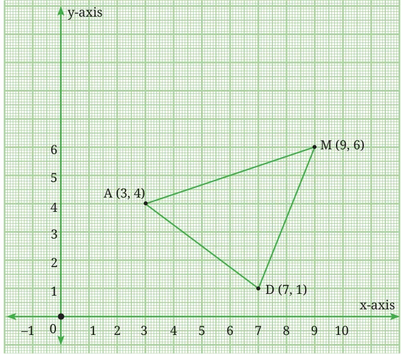
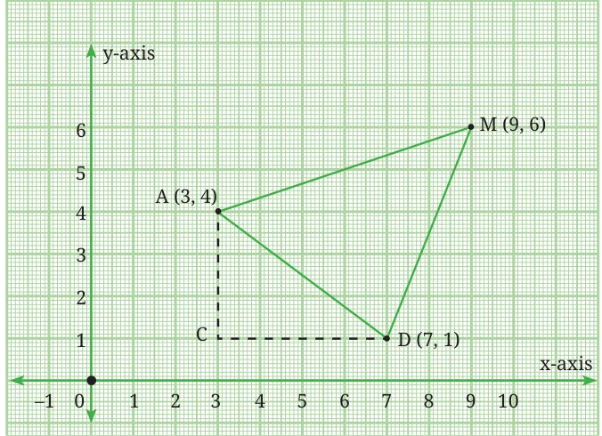
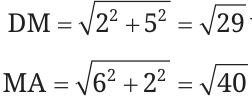
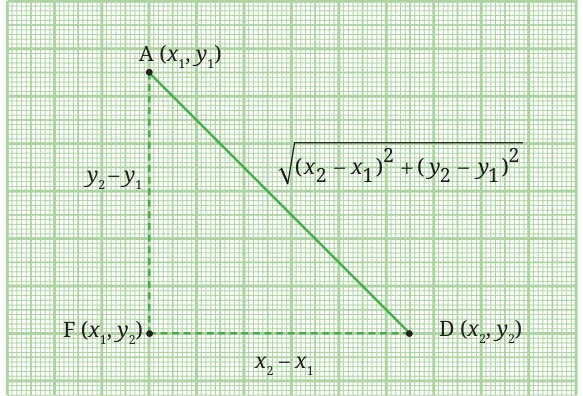
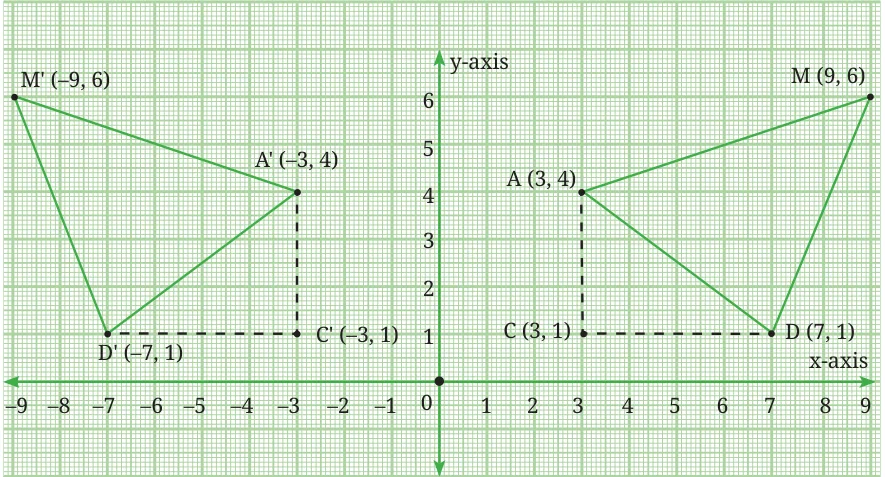
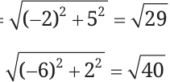
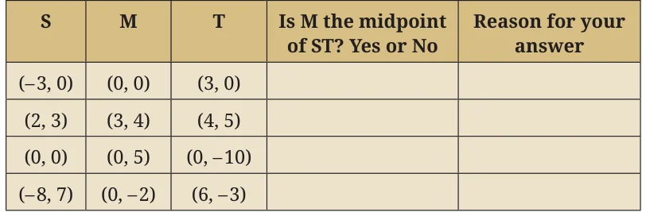

<!DOCTYPE html>
<html lang="en">
<head>
<meta charset="UTF-8">
<meta name="viewport" content="width=device-width,initial-scale=1">
<title>1.4 Distance Between Two Points in the 2-D Plane — Orienting Yourself the Use of Coordinates</title>
<meta name="description" content="Class 9 Mathematics · Orienting Yourself the Use of Coordinates · 1.4 Distance Between Two Points in the 2-D Plane">
<link rel="icon" href="data:image/svg+xml,<svg xmlns='http://www.w3.org/2000/svg' viewBox='0 0 100 100'><text y='.9em' font-size='90'>📘</text></svg>">
<link rel="stylesheet" href="../../../assets/book.css">
<link rel="stylesheet" href="https://cdn.jsdelivr.net/npm/katex@0.16.11/dist/katex.min.css" crossorigin="anonymous">
</head>
<body>
<header class="topbar">
<div class="topbar-in">
  <div class="crumb">
    <span class="c1"><a href="../../../index.html">Library</a> · <a href="../../index.html">Class 9 Mathematics</a></span>
    <span class="c2">Orienting Yourself the Use of Coordinates · 1.4 Distance Between Two Points in the 2-D Plane</span>
  </div>
  <a class="tb-btn" data-nav="prev" href="../../01-orienting-yourself-the-use-of-coordinates/05-exercise-1.2/index.html" title="Exercise 1.2">←</a>
  <details class="drawer"><summary class="tb-btn" title="Sections in this chapter">☰</summary>
<div class="drawer-panel"><div class="dh">Orienting Yourself the Use of Coordinates</div><a href="../01-introduction-1.1/index.html">1.1 Introduction</a><a href="../02-settling-in-1.2/index.html">1.2 Settling In</a><a href="../03-the-2-d-cartesian-coordinate-system-1.3/index.html">1.3 The 2-d Cartesian Coordinate System</a><a href="../04-exercise-1.1/index.html">Exercise 1.1</a><a href="../05-exercise-1.2/index.html">Exercise 1.2</a><a href="../06-distance-between-two-points-in-the-2-d-plane-1.4/index.html" aria-current="page">1.4 Distance Between Two Points in the 2-D Plane</a></div></details>
  <a class="tb-btn" data-nav="next" href="../../02-introduction-to-linear-polynomials/01-introduction-2.1/index.html" title="2.1 Introduction">→</a>
  <button class="tb-btn" data-theme-toggle title="Toggle light / dark" aria-label="Toggle light or dark theme">◐</button>
</div>
<div class="progress"><span style="width:6.6%"></span></div>
</header>
<main class="wrap">
<div class="sec-head">
  <p class="eyebrow"><a href="../index.html">Chapter 1 · Orienting Yourself the Use of Coordinates</a></p>
  <h1>1.4 Distance Between Two Points in the 2-D Plane</h1>
  <p class="sec-meta">Textbook pages 8–15 · 8 figures</p>
</div>
<article class="prose">
<p>We know how to find the distance between two points if they are on the axes or if they form a line segment parallel to the axes. For example, in Fig. 1.5 we can find the distances W_{1}W_{2} and S_{1}S_{2}. What should we do if the segment joining the points is not parallel to either axis? We can use the Baudhāyana - Pythagoras theorem which you have studied in Grade 8. We can use this result to find the distance between any two points in the xy-plane.</p>
<p>Look at triangle ADM in Fig. 1.6.</p>
<figure class="fig table-fig wide"><figcaption>Fig. 1.6</figcaption></figure>
<p>Triangle ADM is an acute angled triangle in the first quadrant. How do we find the lengths of its sides AD, DM and MA?</p>
<h2 id="s-think-and-reflect">Think and Reflect</h2>
<ul class="qlist">
<li><span class="mk">1.</span><span class="lt">In moving from A (3, 4) to D (7, 1), what distance has been covered</span></li>
</ul>
<p>along the x-axis? What about the distance along the y-axis?</p>
<ul class="qlist">
<li><span class="mk">2.</span><span class="lt">Can these distances help you find the distance AD?</span></li>
</ul>
<p class="caption">Fig. 1.7 gives us a clue. The distance moved along the x-axis is given by CD.</p>
<p>\(CD =\) x-coordinate of \(D -\) x-coordinate of \(A = 7 - 3 = 4\).</p>
<p>The distance moved along the y-axis is given by AC.</p>
<p>\(AC =\) y-coordinate of \(A -\) y-coordinate of \(D = 4 - 1 = 3\). Using the Baudhāyana - Pythagoras Theorem, we get the distance</p>
<div class="mathblock"><p>\(AD = 4 +3 = 5\) units.</p></div>
<figure class="fig table-fig wide"><figcaption>Fig. 1.7</figcaption></figure>
<p>We similarly find the distances DM and MA:</p>
<figure class="fig"></figure>
<p>= units.</p>
<p>= units.</p>
<p>In general, the distance between the points (x_{1}, y_{1}) and (x_{2}, y_{2}) is given by</p>
<div class="mathblock"><p>\((x2 - x1) +\) ( \(y2 - y1)\)</p></div>
<p>and is calculated as shown in Fig. 1.8.</p>
<figure class="fig table-fig"><figcaption>Fig. 1.8</figcaption></figure>
<p>It makes no difference whether \((x_{2} - x_{1})\) and \((y_{2} - y_{1})\) are positive or negative, as we are simply measuring the shifts along the two axes. What if, x_{1}, x_{2}, y_{1}, y_{2} take negative values? In Fig. 1.9, triangle AMD is reflected in the y-axis. What are the coordinates of the images of points A, M, and D?</p>
<figure class="fig table-fig wide"><figcaption>Fig. 1.9</figcaption></figure>
<p>C'D' = x-coordinate of A' - x-coordinate of D' \(= - 3 -\) ( \(- 7) = 4\). A'C' = y-coordinate of A' - y-coordinate of D' \(= 4 - 1 = 3\).</p>
<p>Using the Baudhāyana - Pythagoras Theorem, we get \(AD = 4 +3 = 5\) units. You can similarly calculate both D'M' and M'A':</p>
<p>D'M' = units</p>
<figure class="fig"></figure>
<p>M'A' = units.</p>
<p>We see that reflection has preserved the lengths of the sides of the triangles.</p>
<h2 id="s-think-and-reflect">Think and Reflect</h2>
<ul class="qlist">
<li><span class="mk">1.</span><span class="lt">What has remained the same and what has changed with this</span></li>
</ul>
<p>­reflection?</p>
<ul class="qlist">
<li><span class="mk">2.</span><span class="lt">Would these observations be the same if ΔADM is reflected in the</span></li>
</ul>
<p>x-axis (instead of the y-axis)?</p>
<figure class="fig"></figure>
<ul class="qlist">
<li><span class="mk">1.</span><span class="lt">What are the x-coordinate and y-coordinate of the point of</span></li>
</ul>
<p>intersection of the two axes?</p>
<ul class="qlist">
<li><span class="mk">2.</span><span class="lt">Point W has x-coordinate equal to \(- 5\). Can you predict the</span></li>
</ul>
<p>coordinates of point H which is on the line through W parallel to the y-axis? Which quadrants can H lie in?</p>
<ul class="qlist">
<li><span class="mk">3.</span><span class="lt">Consider the points R (3, 0), A (0, \(- 2)\), M ( \(- 5\), \(- 2)\) and P ( \(- 5\), 2). If</span></li>
</ul>
<p>they are joined in the same order, predict:</p>
<ul class="qlist">
<li><span class="mk">(i)</span><span class="lt">Two sides of RAMP that are perpendicular to each other.</span></li>
<li><span class="mk">(ii)</span><span class="lt">One side of RAMP that is parallel to one of the axes.</span></li>
<li><span class="mk">(iii)</span><span class="lt">Two points that are mirror images of each other in one axis.</span></li>
</ul>
<p>Which axis will this be? Now plot the points and verify your predictions.</p>
<ul class="qlist">
<li><span class="mk">4.</span><span class="lt">Plot point Z (5, \(- 6)\) on the Cartesian plane. Construct a right-angled</span></li>
</ul>
<p>triangle IZN and find the lengths of the three sides. (Comment: Answers may differ from person to person.)</p>
<ul class="qlist">
<li><span class="mk">5.</span><span class="lt">What would a system of coordinates be like if we did not have</span></li>
</ul>
<p>negative numbers? Would this system allow us to locate all the points on a 2-D plane? *6. Are the points M ( \(- 3\), \(- 4)\), A (0, 0) and G (6, 8) on the same straight line? Suggest a method to check this without plotting and joining the points. *7. Use your method (from Problem 6) to check if the points R ( \(- 5\), \(- 1)\), B ( \(- 2\), \(- 5)\) and C (4, \(- 12)\) are on the same straight line. Now plot both sets of points and check your answers. *8. Using the origin as one vertex, plot the vertices of:</p>
<ul class="qlist">
<li><span class="mk">(i)</span><span class="lt">A right-angled isosceles triangle.</span></li>
<li><span class="mk">(ii)</span><span class="lt">An isosceles triangle with one vertex in Quadrant III and the</span></li>
</ul>
<p>other in Quadrant IV.</p>
<p>*9. The following table shows the coordinates of points S, M and T. In each case, state whether M is the midpoint of segment ST. Justify your answer.</p>
<figure class="fig table-fig wide"></figure>
<p>When M is the mid-point of ST, can you find any connection between the coordinates of M, S and T?</p>
<p>*10. Use the connection you found to find the coordinates of B given that M ( \(- 7\), 1) is the midpoint of A (3, \(- 4)\) and B (x, y).</p>
<p>*11. Let P, Q be points of trisection of AB, with P closer to A, and Q closer to B. Using your knowledge of how to find the coordinates of the midpoint of a segment, how would you find the coordinates of P and Q? Do this for the case when the points are A (4, 7) and B (16, \(- 2)\). *12. (i) Given the points A (1, \(- 8)\), B ( \(- 4\), 7) and C ( \(- 7\), \(- 4)\), show that they lie on a circle K whose center is the origin O (0, 0). What is the radius of circle K?</p>
<ul class="qlist">
<li><span class="mk">(ii)</span><span class="lt">Given the points D ( \(- 5\), 6) and E (0, 9), check whether D and E</span></li>
</ul>
<p>lie within the circle, on the circle, or outside the circle K.</p>
<p>*13. The midpoints of the sides of triangle ABC are the points D, E, and F. Given that the coordinates of D, E, and F are (5, 1), (6, 5), and (0, 3), respectively, find the coordinates of A, B and C.</p>
<ul class="qlist">
<li><span class="mk">14.</span><span class="lt">A city has two main roads which cross each other at the centre</span></li>
</ul>
<p>of the city. These two roads are along the North - South (N - S) direction and East - West (E - W) direction. All the other streets of the city run parallel to these roads and are 200 m apart. There are 10 streets in each direction.</p>
<ul class="qlist">
<li><span class="mk">(i)</span><span class="lt">Using 1 cm \(= 200 m\), draw a model of the city in your notebook.</span></li>
</ul>
<p>Represent the roads/streets by single lines.</p>
<ul class="qlist">
<li><span class="mk">(ii)</span><span class="lt">There are street intersections in the model. Each street</span></li>
</ul>
<p>intersection is formed by two streets - one running in the \(N - S\) direction and another in the \(E - W\) direction. Each street</p>
<p>intersection is referred to in the following manner: If the second street running in the \(N - S\) direction and 5th street in the \(E - W\) direction meet at some crossing, then we call this street intersection (2, 5). Using this convention, find:</p>
<ul class="qlist">
<li><span class="mk">(a)</span><span class="lt">how many street intersections can be referred to as (4, 3).</span></li>
<li><span class="mk">(b)</span><span class="lt">how many street intersections can be referred to as (3, 4).</span></li>
<li><span class="mk">15.</span><span class="lt">A computer graphics program displays images on a rectangular</span></li>
</ul>
<p>screen whose coordinate system has the origin at the bottom-left corner. The screen is 800 pixels wide and 600 pixels high. A circular icon of radius 80 pixels is drawn with its centre at the point A (100, 150). Another circular icon of radius 100 pixels is drawn with its centre at the point B (250, 230). Determine:</p>
<ul class="qlist">
<li><span class="mk">(i)</span><span class="lt">whether any part of either circle lies outside the screen.</span></li>
<li><span class="mk">(ii)</span><span class="lt">whether the two circles intersect each other.</span></li>
<li><span class="mk">16.</span><span class="lt">Plot the points A (2, 1), B ( \(- 1\), 2), C ( \(- 2\), \(- 1)\), and D (1, \(- 2)\) in the</span></li>
</ul>
<p>coordinate plane. Is ABCD a square? Can you explain why? What is the area of this square?</p>
<p>Chapter Summary</p>
<p>To locate the position of an object or a point in a plane, we require two perpendicular lines - One of them is horizontal, and the other is vertical. z The plane is called the cartesian plane, the coordinate plane or the  xy-plane and the lines are called the coordinate axes. z The horizontal line is called the x-axis and the vertical line is called the  y-axis.</p>
<p>The coordinate axes divide the plane into four parts called ­quadrants . z The point of intersection of the axes is called the origin. z The distance of a point from the y-axis is its x-coordinate and the distance of the point from the x-axis is its x-coordinate of a point is x, and the y-coordinate isy-coordinate y, then (. If the x, y) are called the coordinates of the point.</p>
<p>The coordinates of a point on the x-axis are of the form (x, 0), and those of the points on the y-axis are of the form (0,  y).</p>
<p>The coordinates of a point are of the form (+, +) in the first quadrant, ( - , +) in the second quadrant, ( - , - ) in the third quadrant and (+, - ) in the fourth quadrant. z If \(x = y\), then (x, y) = (y, x). If \(x \ne y\), then (x, y) \(\ne\) (y, x).</p>
<p>The coordinates of the origin are (0, 0).</p>
<p>The distance between points (x_{1}, y) and (x_{2}, y) is the absolute value \(|x_{2} - x_{1}|of\) the difference ­between x_{1} and x_{2}. </p>
<p>The distance between points (x, y_{1}) and (x, y_{2}) is the absolute value \(|y_{2} - y_{1}|of\) the difference between y_{1} and y_{2}. </p>
<p>By the Baudhāyana - Pythagoras Theorem, the distance between</p>
<p>points (x_{1}, y_{1}) and (x_{2}, y_{2}) is \((x_{2} - x_{1}) +( y_{2} - y_{1})\) .</p>
</article>
<nav class="pager"><a class="" data-nav="prev" href="../../01-orienting-yourself-the-use-of-coordinates/05-exercise-1.2/index.html"><span class="dir">← Previous</span><span class="t">Exercise 1.2</span><span class="ch">Orienting Yourself the Use of Coordinates</span></a><a class="nx" data-nav="next" href="../../02-introduction-to-linear-polynomials/01-introduction-2.1/index.html"><span class="dir">Next →</span><span class="t">2.1 Introduction</span><span class="ch">Introduction to Linear Polynomials</span></a></nav>
</main><footer class="site">Generated from the source textbook PDFs · text, figures and exercises belong to their respective publishers.</footer><script defer src="https://cdn.jsdelivr.net/npm/katex@0.16.11/dist/katex.min.js" crossorigin="anonymous"></script>
<script defer src="https://cdn.jsdelivr.net/npm/katex@0.16.11/dist/contrib/auto-render.min.js" crossorigin="anonymous"
  onload="renderMathInElement(document.body,{delimiters:[
    {left:'\\(',right:'\\)',display:false},
    {left:'$$',right:'$$',display:true},
    {left:'\\[',right:'\\]',display:true}],throwOnError:false,ignoredTags:['script','noscript','style','textarea','pre','code']})"></script>
<script src="../../../assets/book.js"></script>
</body>
</html>
